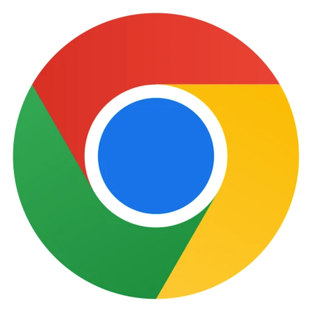

Subscription Feed Filter for YouTube
Filters such as Live, Streamed, Video, and Keyword search can be added to Subscriptions, Playlists, and other YouTube pages.

YouTube Live Stream Latency Mitigator
This extension syncs YouTube live streams in real-time by accelerating viewer-delayed streams caused by data reception delays.

Auto Pan by Window Position
This extension enables audio panning to the left or right based on the window's position relative to the display center.

Improve YouTube Live Chat
This extension provides the features to improve YouTube live chat.

YouTube Volume Control
This extension adds a button to YouTube videos that allows you to change the volume with touch operations.

YouTube Playback Quality Control
This extension adds a button to YouTube videos that allows you to change the playback quality with touch operations.

YouTube Playback Rate Control
This extension adds a button to YouTube videos that allows you to change the playback rate with touch operations.

Pin YouTube Control
This extension adds a button to pin the YouTube controls.

Seek to Timecode Control for YouTube
An extension that allows you to seek to any time by clicking the current time on a YouTube video and entering a timecode

YouTube Thumbnail Button
Button to show the YouTube thumbnail

Simplify YouTube
Simplify YouTube Control
Quick Post ScreenShot
Supports posting video screenshots to X
Remove from watch history button for YouTube Player
This extension adds a button to YouTube Player that removes the view of current video from your watch history.